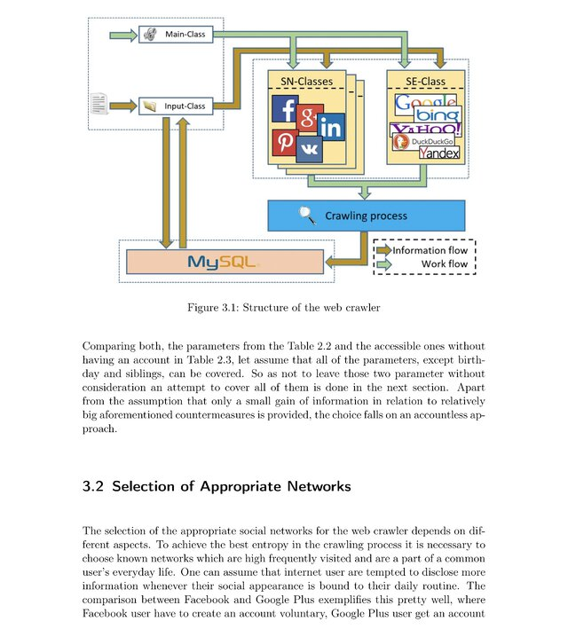
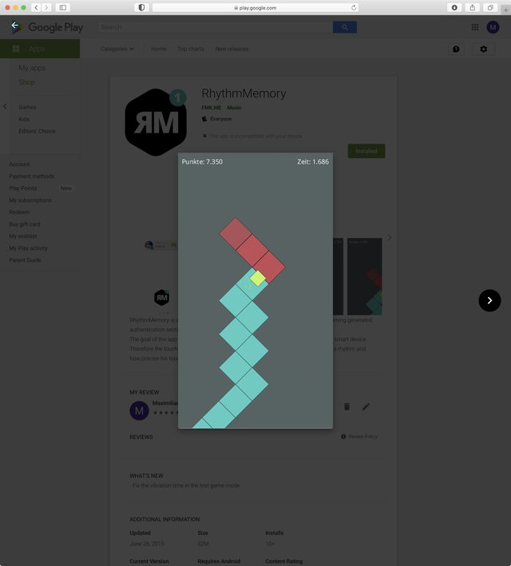

Projects & Software
Below you can find a list of cool projects I created or have been involved with.Last update: September 2021


May 2017

Authentication in Virtual Reality:
Predictive Keyboard for Entering Passwords
Predictive Keyboard for Entering Passwords


October 2015

Gathering User Information:
PII-Based Password Guessing
PII-Based Password Guessing
July 2015

Learning Authentication Secrets:
Knock Patterns
Knock Patterns
December 2014

Attacking Audio CAPTCHAs:
Breaking Apple's iCloud Audio CAPTCHA
Breaking Apple's iCloud Audio CAPTCHA
July 2014

Graphical Fallback Authentication:
Google Street View-Based Authentication
Google Street View-Based Authentication